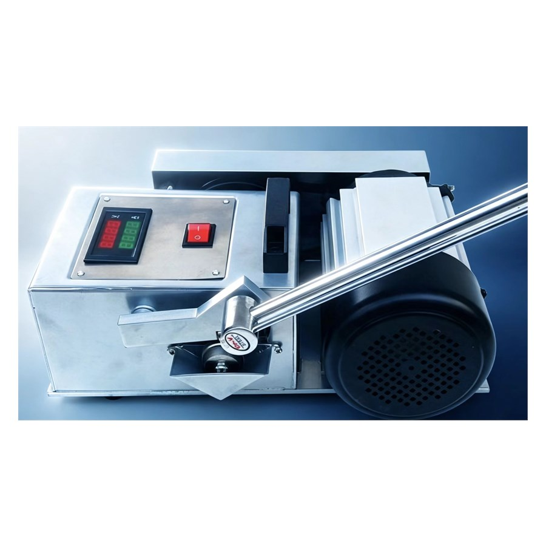

| Model | Timken Bearing Wear Tester |
|---|---|
| Test Method | Timken OK Load Method (ASTM D2782) |
| Test Object | Bearing-type ring against fixed steel block |
| Power Supply | AC 220 V, 50 Hz |
| Loading | Lever with graded weights |
| Observation | Current, noise, temperature, surface scoring |
| Structure | Compact bench-top cabinet with side drive motor |
Show how oil quality directly affects bearing life under load.
Compare greases for motor and pump bearing applications.
Live side-by-side runs make anti-wear benefits visible.
Demonstrate boundary lubrication failure with a real bearing contact.
Buy straight from the manufacturer. Competitive wholesale pricing for distributors, labs and bulk orders — OEM labeling available.
Designed and tested against ASTM, GB/T, SH/T and ISO methods for reliable, repeatable oil product quality assurance.
Export-grade wooden case packaging with worldwide delivery via air / sea freight. Sample units ship within 3–5 business days.
Operation manuals, test videos and remote engineering support for the entire product lifecycle from our technical team.